Manual operacional
Natal Premiado 2026
Guia prático para a equipe comercial operar a campanha na Central Comercial.
Campanha03/11 a 10/12/2026
Sorteio15/12/2026
PúblicoEquipe comercial
Manual operacional
Guia prático para a equipe comercial operar a campanha na Central Comercial.
Todas as telas deste manual usam dados fictícios de um ambiente de testes. Nomes, valores e documentos não são reais. O endereço de link mostrado nas imagens é apenas um exemplo e não funciona. Use sempre o link que aparece na Central.
O Natal Premiado incentiva as compras dos distribuidores e premia os pet shops que compram produtos Atual Pet. Cada compra de distribuidor gera benefícios. Os pet shops se cadastram pelo link do distribuidor e recebem a quantidade de cupons que o distribuidor entregar. Cada cupom é uma chance individual no sorteio, depois da validação.
| Informação | Detalhe |
|---|---|
| Período da campanha | 03/11/2026 a 10/12/2026 |
| Sorteio | 15/12/2026 |
| Prêmio | 1 Kit Groomer Profissional (1 soprador e 1 secador) |
| Onde operar | Menu Campanhas > Natal Premiado 2026 |
| Acumulado no ciclo | Cupons | Marketing | Produtos |
|---|---|---|---|
| Abaixo de R$ 12.000 | 0 | 0% | 0% |
| R$ 12.000 a R$ 19.999,99 | 100 | 3% | 5% |
| R$ 20.000 a R$ 29.999,99 | 200 | 3% | 7% |
| R$ 30.000 a R$ 39.999,99 | 300 | 3% | 10% |
| R$ 40.000 | 400 | 3% | 10% |
R$ 40.000 completam o 1º ciclo e liberam 400 cupons. Os R$ 12.000 restantes abrem o 2º ciclo e liberam mais 100 cupons. Total: 500 cupons.
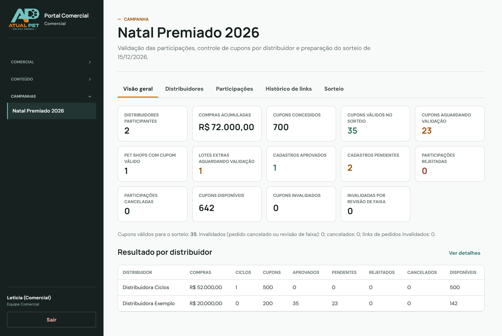
| Atividade | Comercial | Administrador |
|---|---|---|
| Aprovar, rejeitar e cancelar cadastros | Sim | Sim |
| Aprovar, rejeitar e cancelar lotes de cupons | Sim | Sim |
| Registrar e validar compras externas | Sim | Sim |
| Decidir revisões de benefícios | Sim | Sim |
| Registrar entrega de bonificações | Sim | Sim |
| Gerar arquivos do sorteio | Sim | Sim |
| Reconciliar saldos | Não | Sim |
| Fechar ou reabrir a lista oficial | Não | Sim |
O pedido entra no acumulado na aprovação, desde que tenha sido lançado no período da campanha. Depois disso, separação, faturamento, envio e entrega não mudam nada: os benefícios já foram calculados e não se repetem.
Ao aprovar um pedido, a Central soma o valor ao acumulado, identifica a faixa e libera somente a diferença de cupons. Não há nada a lançar manualmente.
Ao subir de faixa, o distribuidor recebe apenas o que falta para chegar ao total da nova faixa.
| Pedido | Valor | Situação do ciclo | Cupons novos |
|---|---|---|---|
| 1º | R$ 12.000 | 1º ciclo com R$ 12.000 | 100 |
| 2º | R$ 8.000 | 1º ciclo com R$ 20.000 | 100 |
| 3º | R$ 20.000 | 1º ciclo fechado em R$ 40.000 | 200 |
| 4º | R$ 8.000 | 2º ciclo com R$ 8.000 | 0 |
| 5º | R$ 4.000 | 2º ciclo com R$ 12.000 | 100 |
| 6º | R$ 8.000 | 2º ciclo com R$ 20.000 | 100 |
| Total | R$ 60.000 | 1 ciclo completo e o 2º em andamento | 600 |
Um pedido menor não libera benefícios sozinho, mas o valor fica guardado. Se o distribuidor comprar R$ 8.000 e depois R$ 4.000, o acumulado chega a R$ 12.000 e os 100 cupons são liberados na segunda aprovação.
1 ciclo completo mais R$ 12.000 no 2º: 500 cupons.
2 ciclos completos: 800 cupons.
O saldo pertence ao distribuidor, não ao pedido. Depois de cada aprovação, os novos cupons aparecem automaticamente no mesmo link. O distribuidor continua divulgando o endereço que já tem.
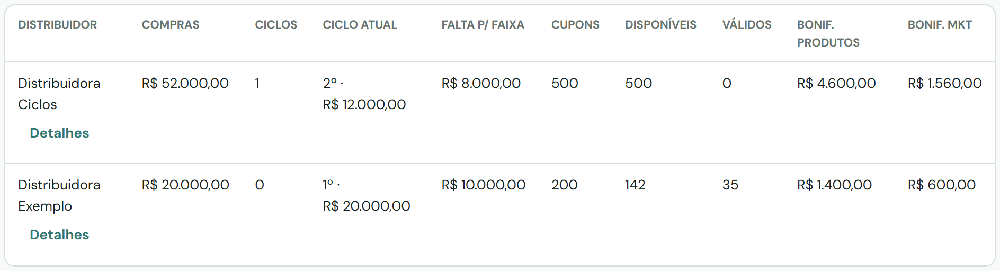
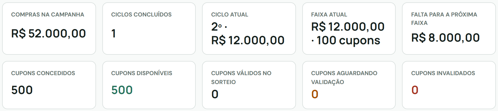
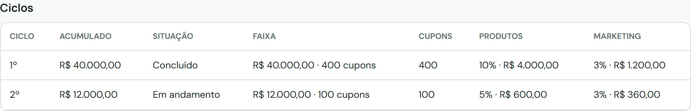
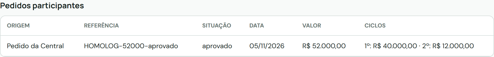
Cada distribuidor divulga um único link. Por ele, os pet shops enviam os cadastros. O mesmo link vale para todos os pedidos e todos os ciclos.
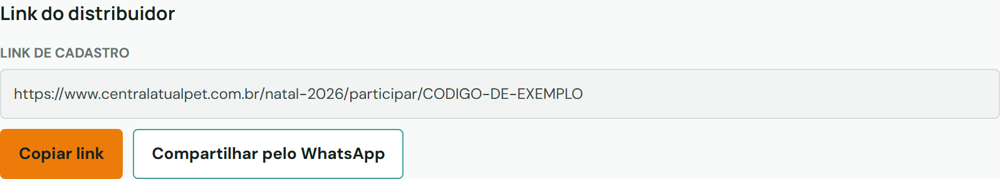
Nos detalhes do distribuidor, veja Cupons concedidos, Cupons disponíveis e Cupons utilizados. Disponível é o que sobra depois de descontar os cadastros aprovados. Cadastro em análise ainda não consome cupom.
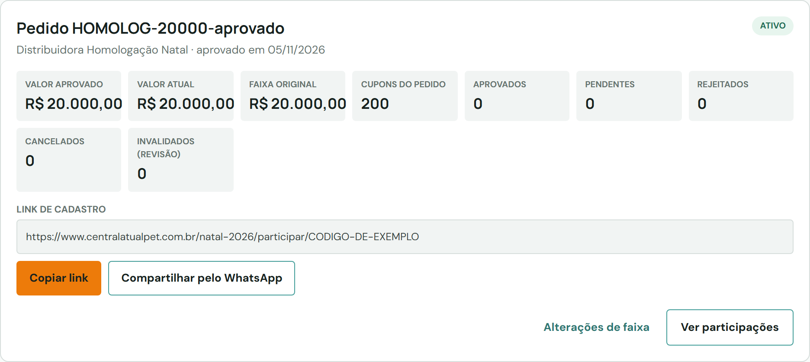
O link é criado automaticamente na primeira compra aprovada ou na primeira compra externa validada. Basta abrir os detalhes do distribuidor e enviar o link.
Enquanto o distribuidor não atingir R$ 12.000, o link existe, mas a página pública informa que não há cupons disponíveis. Ele passa a aceitar cadastros quando os cupons forem liberados.
Use Registrar compra externa para compras feitas fora da Central Comercial, como vendas por telefone ou por outro sistema. Assim o valor entra no acumulado sem criar um pedido no catálogo.
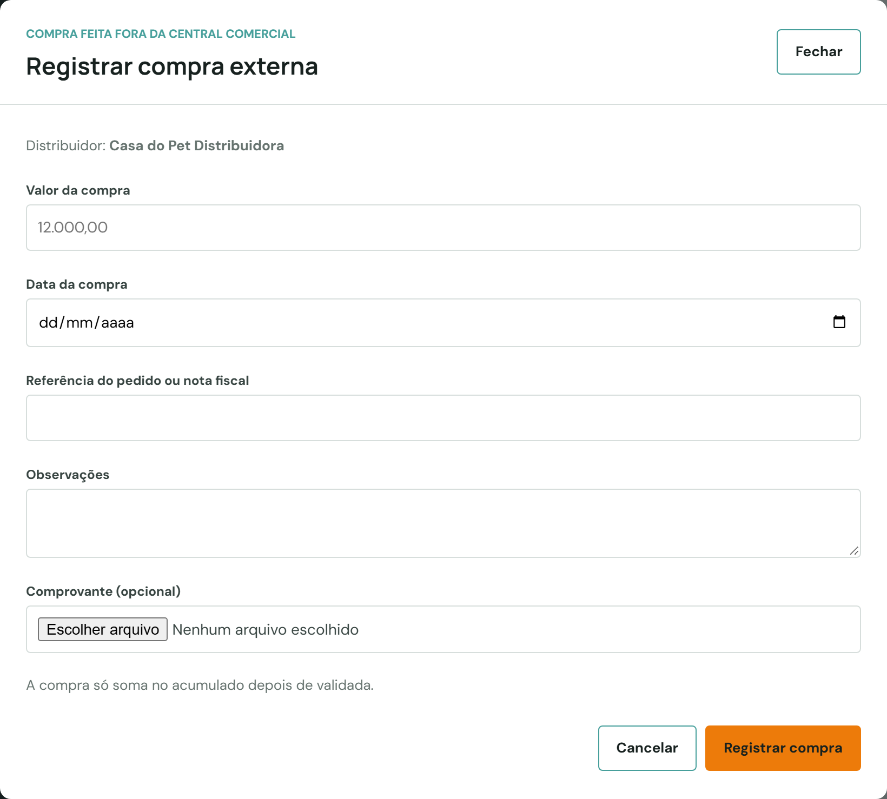
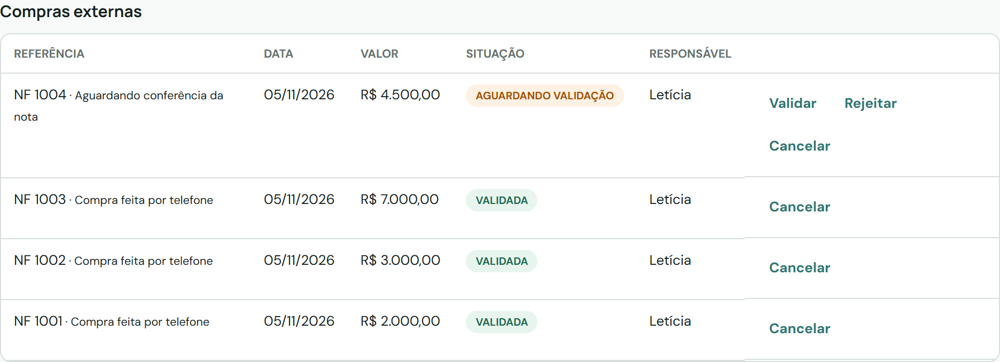
| Compra | Valor | Acumulado | Cupons |
|---|---|---|---|
| Primeira | R$ 2.000 | R$ 2.000 | 0 |
| Segunda | R$ 3.000 | R$ 5.000 | 0 |
| Terceira | R$ 7.000 | R$ 12.000 | 100 |
Total de R$ 12.000 e benefício de 100 cupons, liberados ao validar a terceira compra. A bonificação fica em R$ 600 de produtos e R$ 360 de marketing.
Cancelar uma compra validada retira o valor do acumulado. Se isso atingir benefícios já concedidos, o distribuidor fica com revisão pendente (Parte G).
O botão Ajustar cupons adiciona ou retira cupons sem relação com compras. Exige motivo com pelo menos 10 caracteres e fica registrado com responsável, data e horário. Não é possível retirar cupons que já estejam em uso. Use apenas com orientação do Administrador.
Cada ciclo gera dois valores separados: bonificação em produtos e verba de marketing. A porcentagem da faixa vale sobre todo o acumulado do ciclo.
| Acumulado no ciclo | Produtos | Valor | Marketing | Valor |
|---|---|---|---|---|
| R$ 12.000 | 5% | R$ 600 | 3% | R$ 360 |
| R$ 20.000 | 7% | R$ 1.400 | 3% | R$ 600 |
| R$ 30.000 | 10% | R$ 3.000 | 3% | R$ 900 |
| R$ 40.000 | 10% | R$ 4.000 | 3% | R$ 1.200 |
A cada nova faixa, o sistema calcula o total do ciclo e desconta o que já foi concedido nele. O resultado é o complemento.
| Acumulado | Total devido em produtos | Já concedido | Complemento |
|---|---|---|---|
| R$ 12.000 | R$ 600 (5%) | R$ 0 | R$ 600 |
| R$ 20.000 | R$ 1.400 (7%) | R$ 600 | R$ 800 |
| R$ 40.000 | R$ 4.000 (10%) | R$ 1.400 | R$ 2.600 |
Ao abrir um novo ciclo, a conta recomeça do zero, sem interferir no ciclo anterior. A verba de marketing segue a mesma lógica, sempre em registro separado.
Nos detalhes do distribuidor, o bloco Bonificações mostra, por ciclo e tipo: devido, concedido, entregue e pendente. Pendente é o que foi concedido e ainda não foi entregue. Abra Histórico das bonificações para ver a origem de cada complemento.
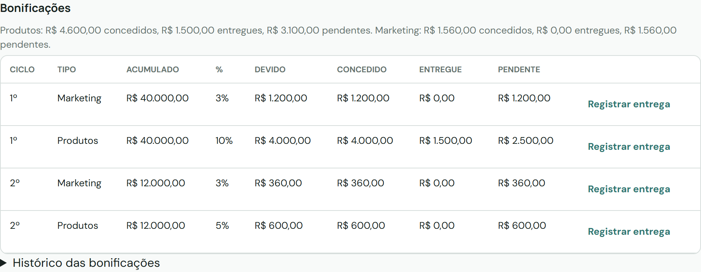
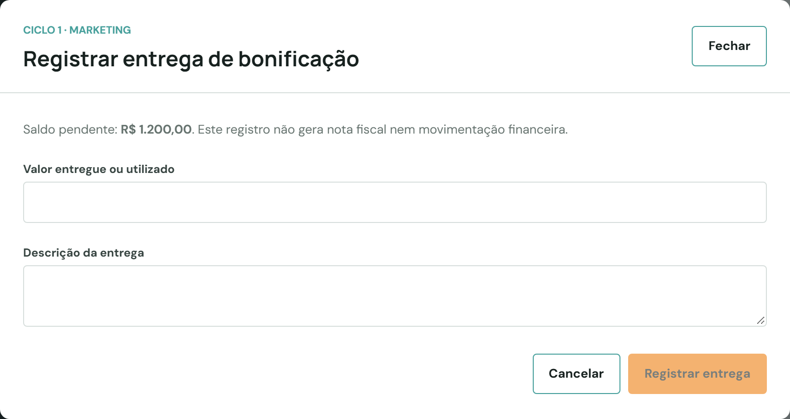
Calculado não significa entregue. Registre somente depois que os produtos ou a verba tiverem sido realmente entregues.
Os pet shops preenchem o formulário pelo link do distribuidor, informam quantos cupons recebem e anexam o comprovante. Todo cadastro entra como Pendente.
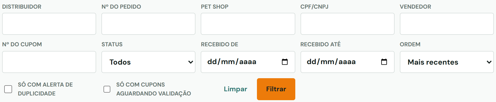
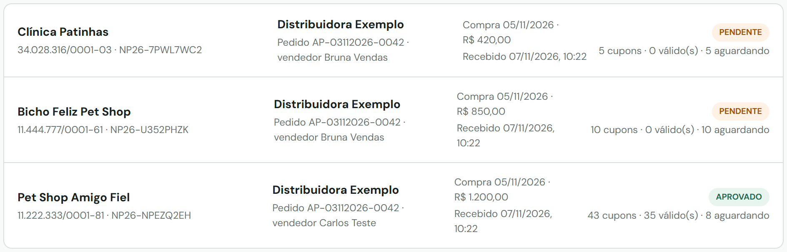
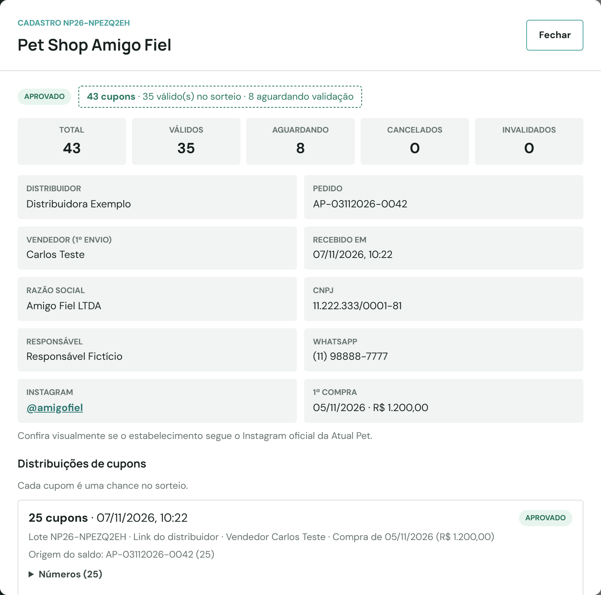
O sistema avisa quando encontra o mesmo comprovante, ou o mesmo CPF/CNPJ com mesma data, em qualquer cadastro ou lote, inclusive em lotes anteriores do mesmo pet shop. É um alerta para análise, não uma recusa: o mesmo pet shop pode receber vários lotes por compras diferentes.
Cadastros antigos, feitos várias vezes para o mesmo pet shop antes dos múltiplos cupons, ficam com o aviso Cadastro antigo com o mesmo CPF/CNPJ. Nada é juntado automaticamente: os novos lotes vão para o cadastro mais antigo e os demais seguem como estão, para a sua análise.
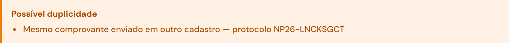
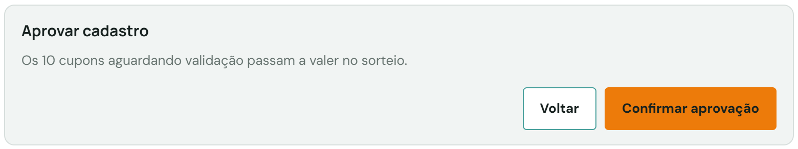
Na seção Distribuições de cupons do cadastro, cada lote mostra quantidade, data, vendedor, compra, origem do saldo e os números.
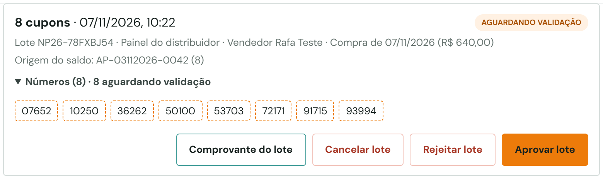
Use quando o cadastro não atende às regras. Clique em Rejeitar cadastro, informe o motivo (mínimo de 5 caracteres) e clique em Confirmar rejeição. Só cadastros pendentes podem ser rejeitados. Todos os cupons aguardando validação são rejeitados e voltam ao saldo do distribuidor. Um novo envio do mesmo CPF/CNPJ abre outro cadastro, pendente.
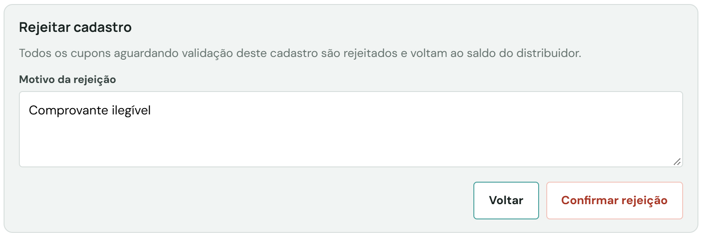
Use para retirar um cadastro pendente ou aprovado inteiro. Clique em Cancelar cadastro, informe o motivo e confirme. Para retirar só uma entrega, use Cancelar lote.
Os cupons cancelados saem do sorteio, voltam ao saldo do distribuidor uma única vez e os números nunca mais são usados. Cupons já invalidados por revisão não voltam.
| Status do cadastro | Significado | Ocupa saldo? |
|---|---|---|
| Pendente | Aguardando análise; cupons gerados, fora do sorteio | Sim, reservado |
| Aprovado | Cupons validados vão para o sorteio | Sim |
| Rejeitado | Não atendeu às regras | Não |
| Cancelado | Retirado pela gestão ou pelo distribuidor | Não |
| Invalidado | Retirado por decisão de adequação ou registro antigo de pedido cancelado | Não |
Quando um pedido é reduzido, cancelado ou excluído, o acumulado cai. Se isso atingir benefícios já concedidos, o sistema não retira nada sozinho: a decisão é administrativa.
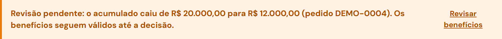
Ao editar um pedido para um valor menor, a mesma janela de revisão aparece antes de salvar, se a redução atingir benefícios. Reduções que não atingem nada são salvas normalmente.
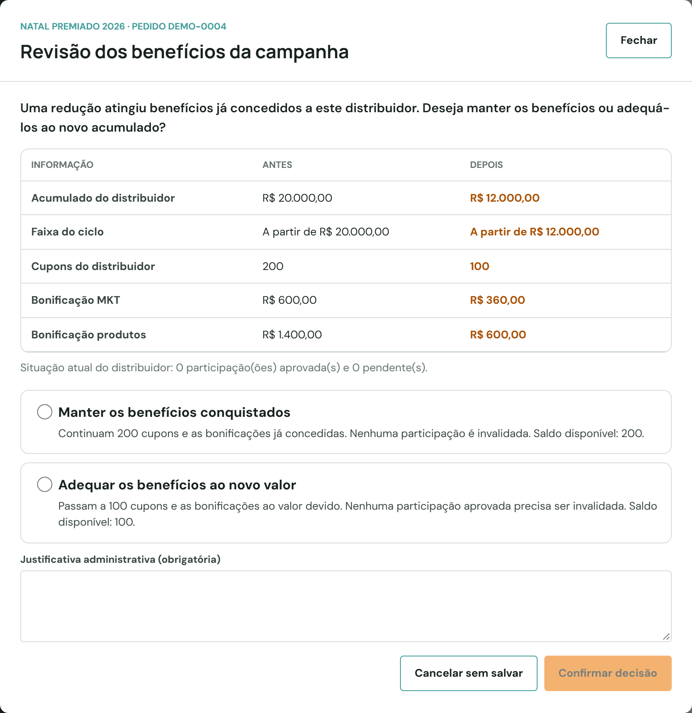
Adequar pode invalidar cupons de pet shops que não têm relação com o pedido alterado. A origem do saldo mostrada em cada lote é informativa e não muda essa regra. Enquanto a revisão estiver pendente, novas aprovações continuam possíveis e podem ser atingidas pela decisão. Decida antes de seguir com as aprovações desse distribuidor.
Às vezes um pedido é aprovado normalmente, mas o saldo da campanha não se atualiza por uma falha momentânea. O sistema compara o saldo com os pedidos e compras e mostra um aviso sempre que encontra diferença.
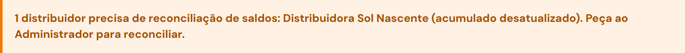
Sem o aviso, os saldos estão corretos. Distribuidor abaixo da primeira faixa não gera alerta por esse motivo.
Não ajuste cupons, não registre compra externa e não recrie pedidos para corrigir o saldo. A reconciliação aplica apenas a diferença, e um lançamento manual pode gerar benefício em dobro.
Recarregue a gestão da campanha. O aviso desaparece quando não há mais diferença. Se um distribuidor continuar listado, avise novamente o Administrador.
O sorteio considera cupons, não cadastros. Cada cupom válido é uma chance: um pet shop com 25 cupons válidos tem 25 números, e outro com 5 tem 5. Somente cupons válidos, de cadastros e lotes aprovados, entram. Aguardando validação, rejeitados, cancelados, invalidados e saldo não usado ficam de fora.
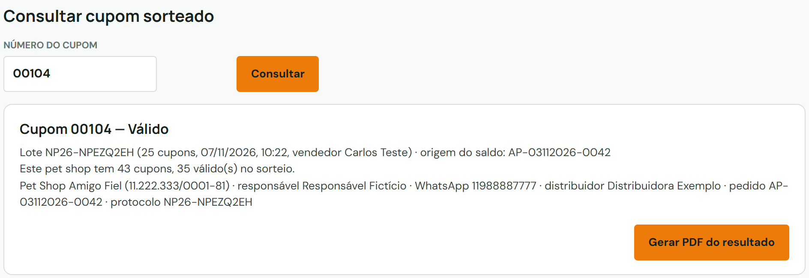
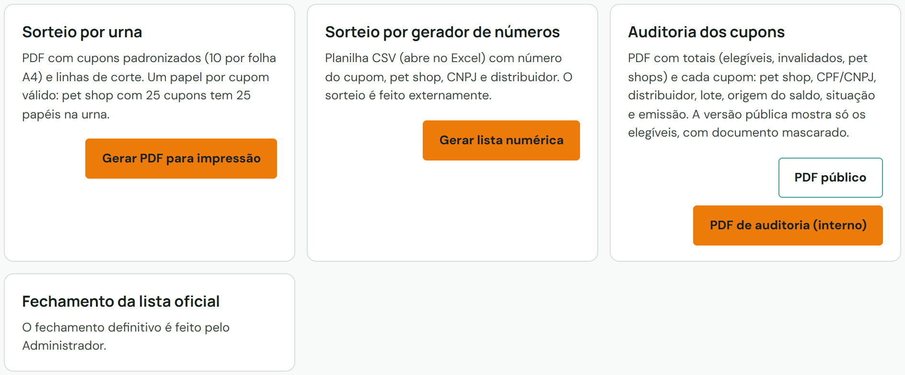
Gerar PDF para impressão cria os cupons em A4, 10 por folha, com linhas de corte. É um papel por cupom válido.
Gerar lista numérica cria uma planilha com cupom, pet shop, documento, distribuidor, lote e origem do saldo, para sorteio externo.
PDF de auditoria (interno) traz os totais (elegíveis, invalidados, pet shops) e cada cupom com pet shop, CPF/CNPJ, distribuidor, lote, origem, situação e emissão. O PDF público lista só os elegíveis, com o documento mascarado.
Cada arquivo gerado fica registrado em Histórico de exportações, com data, nome do arquivo, quantidade de cupons, tipo de lista, responsável e código SHA-256. Esse código identifica o arquivo gerado e serve para comprovar qual versão foi usada.
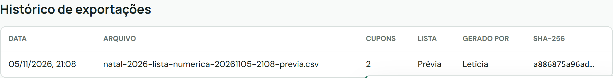
Enquanto a lista estiver aberta, todo arquivo é uma prévia. Depois que o Administrador fechar a lista, os arquivos saem como oficiais.
Com a lista fechada, aprovações, rejeições e cancelamentos ficam bloqueados para a equipe comercial. Qualquer exceção depende do Administrador, com justificativa.
Pedido da Central já conta na aprovação. Só registre como compra externa o que foi vendido fora da Central.
Pedido fictício distorce o acumulado, os cupons e as bonificações. Quando a compra real foi feita fora da Central, use a compra externa.
Cancelar um cadastro aprovado ou adequar benefícios invalida números que nunca voltam. Leia o impacto antes de confirmar.
O registro serve de controle. Faça-o somente depois da entrega efetiva.
Alerta de sincronização, lista fechada, cancelamento por falta de estoque, suspeita de fraude ou qualquer caso que este manual não cubra.
| Mensagem no link | O que significa | O que fazer |
|---|---|---|
| Sem cupons disponíveis no momento | O distribuidor ainda não atingiu a primeira faixa, ou o saldo foi retirado por revisão | Consulte o acumulado nos detalhes |
| Todos os cupons já foram utilizados | Todo o saldo está em cadastros aprovados | Informe o valor que falta para a próxima faixa |
| Todos os cupons disponíveis já estão reservados | Todo o saldo está em cupons válidos ou aguardando validação | Analise os cadastros e lotes pendentes |
| Saldo insuficiente | A quantidade pedida passa do saldo disponível | Oriente a enviar uma quantidade menor |
| Prazo terminou em 10/12/2026 | O período de cadastros acabou | Encaminhe ao Administrador, se for exceção |